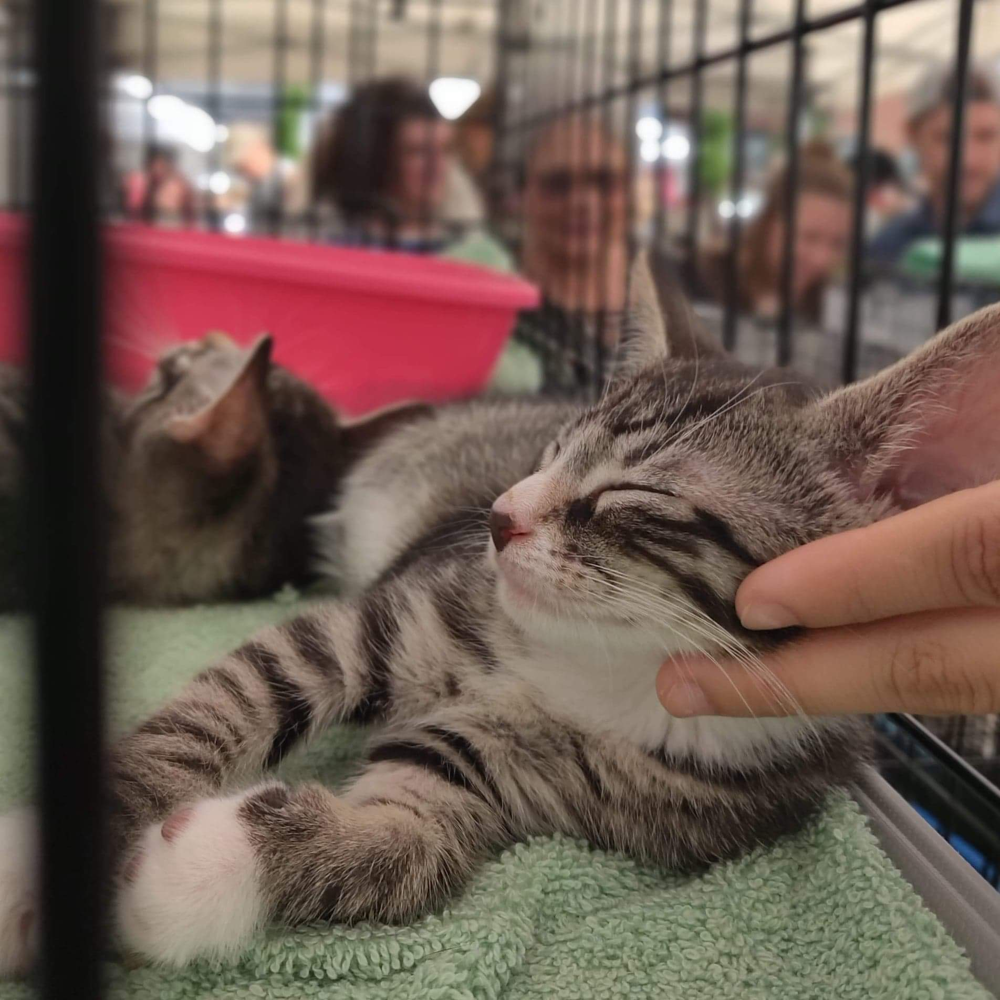
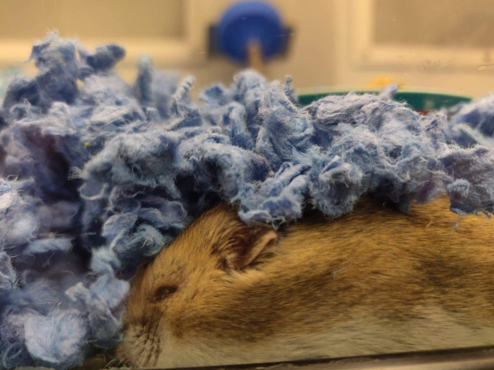

In this section you can view all of my photography which involves the animal section to view my other types of photography view below.
I have always had a love for animals all species and
all sizes even if they are scary.
My favorite animal I enjoy seeing most of all are cats,
in general I like all types of feline species but
my favorite and well closest one I would have is a regular house cat as well as birds,
small reptiles, hamsters or even guinea pigs. I took this beautiful picture
at an adoption event on 14st NYC.

Look at this cutie right here. I forgot what breed of hamster it is
but it was sure sleeping like the world doesn't exist.
Hamsters make great first time pets because they are
very easy to care. I took this picture on 14st Petco, NYC.

Found this cutie outside of a deli
in the Bronx,NYC while I was out visiting
my family. He must be a mix of persian or maine coon.
It is a very majestic looking cat.
Central Park, NYC
One of NYC's beauties is Central Park
specially around the gardens
but now is freezing to even walk around
a lot in the city or even park unless
you're that brave.
Although, I hate going to the Bronx there is only
One specific place where I would not hesitate on going to
and one place is City Island. It is like the suburbs of the Bronx.
I forgot when I took this nice shot but I know it was a special day.
HAPPY HOLIDAYS, GOODBYE